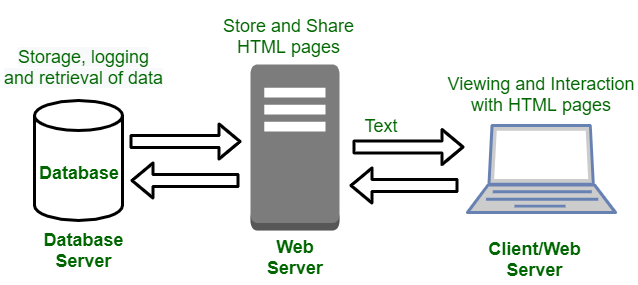

Dynamic Website: In Dynamic Websites, Web pages are returned by the server which is processed during runtime means they are not prebuilt web pages, but they are built during runtime according to the user’s demand with the help of server-side scripting languages such as PHP, Node.js, ASP.NET and many more supported by the server. So, they are slower than static websites but updates and interaction with databases are possible. Dynamic Websites are used over Static Websites as updates can be done very easily as compared to static websites (Where altering in every page is required) but in Dynamic Websites, it is possible to do a common change once, and it will reflect in all the web pages.
